|
|
HELP FIND THE FOLLOWING LOCATIONS
PAGE 31
GIDEON’S WAY:
The Prowler (Robert
Tronson: March
1965)
Wig Creations, 25 Portman Close, W1 - Alan Campbell-Gore (Davis Collings) stops
outside a wig shop and contemplates his strange obsession.


Archway Bridge, Horsey Lane - Alan -Gore
(Davis ) contemplates
suicide and climbs onto a road bridge (Archway Bridge). He is
(Spotted by Geoff Dodd, December 2006)

Kings Road
SW3 entrance to Carlyle Square - Alan -Gore (Davis
) stumbles into Winfield
Square and enters the house where his dead used to live.
(Spotted by Alan Field, August 2007)


Carlyle Square & finally Numbers 29 & 30 Carlyle Square


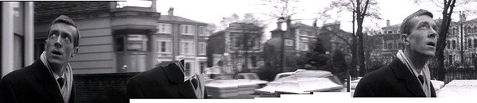
Hanger
Green, W5- Alan
Campbell Gore is compelled to continue his obsession and travels into London
(Identified by Alan Field, December 2007)
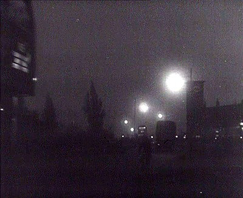
 Alan Field – “Hanger Green W5
alongside the A40 Western Avenue with the tower of Park Royal underground
station in the background. (Poor old Campbell Gore must have got lost in the fog, the 105 bus that
he’s on is heading out of London)”
Alan Field – “Hanger Green W5
alongside the A40 Western Avenue with the tower of Park Royal underground
station in the background. (Poor old Campbell Gore must have got lost in the fog, the 105 bus that
he’s on is heading out of London)”
Collingham Road, SW5 - Alan Campbell Gore (David ) and Sophie Murdoch (Rosemary
Dunham) turn into Gardensas they walk
towards the tube station.
(Spotted by Wiseman, July 2005)


Gloucester
Road, SW5 - Sophie
Murdoch (Rosemary Dunham) chats with Jack (Peter ), her local
(Spotted by Wiseman, July 2005)
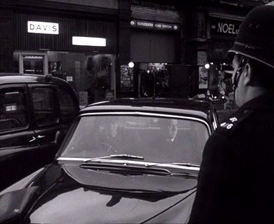 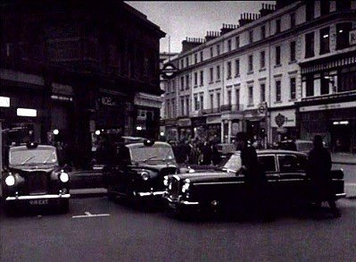 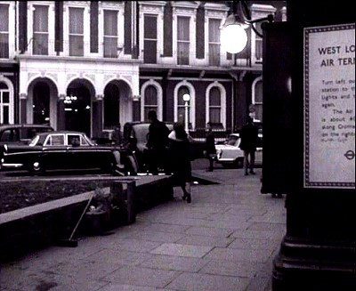
 Tamara Cartwright-, May 2007 - This is, indeed,
Gloucester Road, the Junction with
Road (the taxis are i
Road). The building with the 3 arches is Bailey's Hotel, and the postal
district is SW7. (In the middle ,
the building with the portico is the former home of John the acid bath murderer!)
Tamara Cartwright-, May 2007 - This is, indeed,
Gloucester Road, the Junction with
Road (the taxis are i
Road). The building with the 3 arches is Bailey's Hotel, and the postal
district is SW7. (In the middle ,
the building with the portico is the former home of John the acid bath murderer!)
Crowndale Road, Camden Town, NW1 – B Bravo One
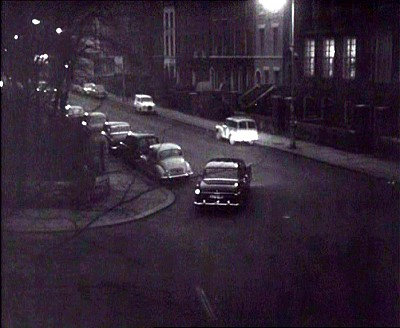 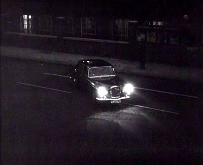
Unknown 5 - Alan -Gore (Davis ) makes his way back to Winfield Square. Detective Inspector Doug Brown (Richard Burrell) is hot on his trail. Gideon (John ) and Keen () arrive on the scene in their car.
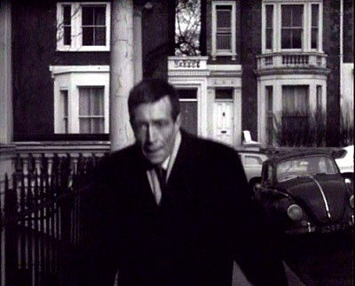
Unknown 5a – Gideon and Keen make their way to Winfield Square.


 The lights are similar to those
at London Wall. The nearest Bennett’s Cameras found so far is 49 Cheapside.
The lights are similar to those
at London Wall. The nearest Bennett’s Cameras found so far is 49 Cheapside.
Unknown 6 -– Gideon and Keen make their way to Winfield Square.
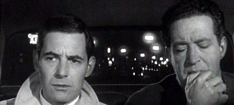
GIDEON’S WAY: The Thin Red Line (Cyril Frankel: March 1965)
Wellington
Barracks, Birdcage Walk – Commander Gideon (John )
is called in by Commissioner Scott-
(Basi)
to investigate the theft of the Balaclava Silver. Later Detective
Superintendent Lemaitre (Reginald Jessup) goes to question Sergeant McKinnon (Gordon
Jackson)about who had access to the silver.


ArtilleryMansions, 75 Victoria Street, SW1 – Robbie arrives at the apartment of his grandfather, General Sir Hector , to escort him to the regimental dinner, but Commander Gideon arrives to act as escort.


Piccadilly Circus, W1 –

Oxford Street, W1 - After the regimental dinner Major Donald Ross accepts a lift home from Captain James Murray….
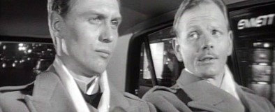 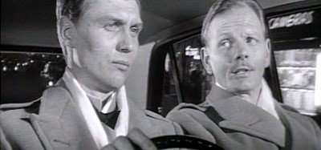
 Bennett’s Cameras – 117 Oxford
Street, W1
Bennett’s Cameras – 117 Oxford
Street, W1
Old
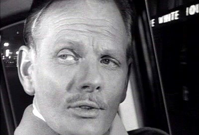

 Castle – House 19-21 Old Bond Street
Castle – House 19-21 Old Bond Street
 The White
House – New Bond Street
The White
House – New Bond Street
Charing
Cross Road – across Oxford Street – into Tottenham Court Road-
(Identified by Alan Field, December 2007)
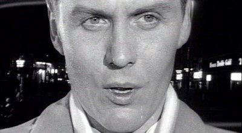


 Alan Field – “The illuminated
canopy in picture 6 has Dominion on it (Dominion Theatre) which, working
backwards, means that the underground station is Tottenham Court Road and West Side
Story is in what is now The Astoria concert venue (don’t know what it was in
the 60s). Two mysteries here.
1) When were
Associated Electrical Industries Ltd in Charing Cross Road. 2) In the Oxford
Street back projection Bennett’s Cameras is passed seconds after passing a No
52 bus. The 52 doesn’t go down Oxford Street.”
Alan Field – “The illuminated
canopy in picture 6 has Dominion on it (Dominion Theatre) which, working
backwards, means that the underground station is Tottenham Court Road and West Side
Story is in what is now The Astoria concert venue (don’t know what it was in
the 60s). Two mysteries here.
1) When were
Associated Electrical Industries Ltd in Charing Cross Road. 2) In the Oxford
Street back projection Bennett’s Cameras is passed seconds after passing a No
52 bus. The 52 doesn’t go down Oxford Street.”
Film of West Side Story released 1961 – stage version at Her Majesty’s Theatre, The Haymarket, closed the same year.
Belgrave Square – Major Donald Ross goes to the
office of Barton-Smith and Company to sort out his finances.
(Identified by Geoff Dodd, April 2007)

SchipholAirport,
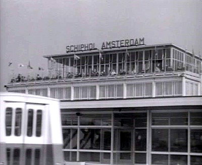
Unknown 3 -

Unknown 4 -

Arc de Triumph, Paris - Detective Chief Inspector David Keen travels to Paris following a lead on a silversmith who may have made the forgeries…..

Palais de Justice and Stainte Chapelle, Paris

Park Lane –
panning round to 105 Park Lane
- Major Donald Ross is spending a relaxing
evening at home with his wife.
(Identified by Alan Field, December 2007)

Eaton Place
Belgravia, SW1-
Captain James Murray is enjoying a relaxing morning with Mrs Ann Ross.
(Identified by Celia O'Connor, May 2008)

 Celia O'Connor
– “I believe this is Eaton Place Belgravia, this is the same location used in
the pilot episode of RANDALL & HOPKIRK:
My Late Lamented Friend And Partner, if
you watch the this episode, you can clearly see the distinctive lamppost and
also on the left side of the street the brown mid-upper section of one of the
buildings amid the white washed buildings. This is perfectly illustrated 7min
30sec into the episode when Sorrensen
gets out of his Rolls Royce. The exact spot is outside no.96 Eaton Place.”
Celia O'Connor
– “I believe this is Eaton Place Belgravia, this is the same location used in
the pilot episode of RANDALL & HOPKIRK:
My Late Lamented Friend And Partner, if
you watch the this episode, you can clearly see the distinctive lamppost and
also on the left side of the street the brown mid-upper section of one of the
buildings amid the white washed buildings. This is perfectly illustrated 7min
30sec into the episode when Sorrensen
gets out of his Rolls Royce. The exact spot is outside no.96 Eaton Place.”
Think you know a spot? Need a bigger image? Email me.
< Previous | Index | Avengerland | Next >
Copyright © 2003 Anthony R. McKay